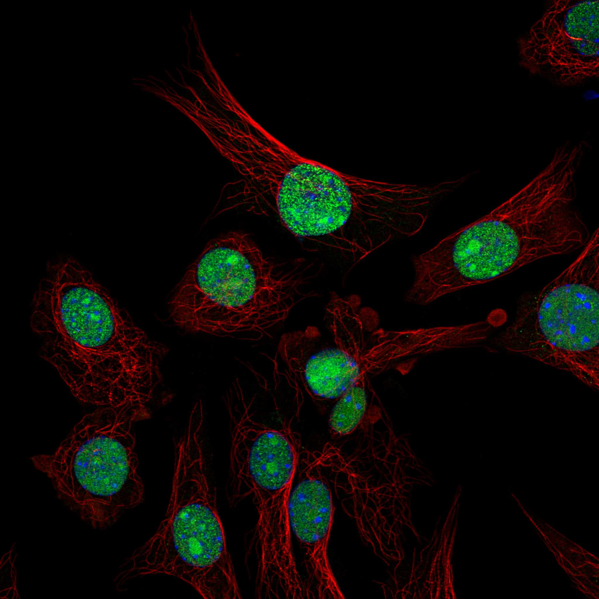
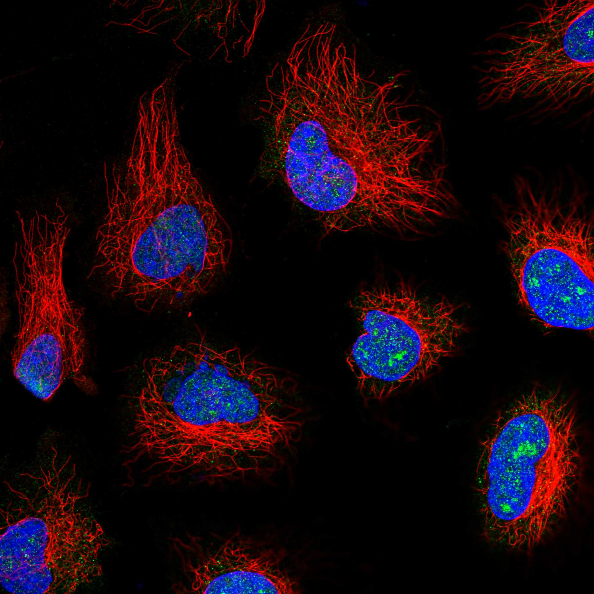
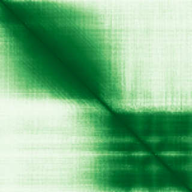

type: protein-evaluation gene: "SPC24" date: 2026-05-30 tags: [protein-scout, nuclear-protein, evaluation] status: scored ---
SPC24 核蛋白评估报告
1. 基本信息
| 项目 | 内容 |
|---|---|
| 基因名 / 别名 | SPC24 / FLJ90806 |
| 蛋白全称 | Kinetochore protein Spc24 |
| 蛋白大小 | 197 aa |
| UniProt ID | Q8NBT2 |
| 评估日期 | 2026-05-30 |
IF 图像:  
2. 评分总览
| 维度 | 得分 | 满分 | 加权后 | 关键证据摘要 | |||
|---|---|---|---|---|---|---|---|
| 核定位特异性 | 8/10 | ×4 | 32 | UniProt 注释为细胞核，中等置信度 | |||
| 蛋白大小 | 8/10 | ×1 | 8 | 197 aa，尚可接受 | |||
| 研究新颖性 | 6/10 | ×5 | 30 | PubMed 45 篇，高度新颖 | |||
| 三维结构 | 8/10 | ×3 | 24 | 4 个 PDB 结构 + AlphaFold 预测 | |||
| 调控结构域 | 7/10 | ×2 | 14 | 2 domain(s), 新颖蛋白基线水平 | |||
| PPI 网络 | 2/10 | ×3 | 6 | PPI 数据极为稀少 | |||
| 互证加分 | -- | -- | +1.5 | UniProt + GO 核定位互证 (+1); PDB + AlphaFold 结构互证 (+0.5) | |||
| 原始总分 | 115/183 | 114.0/183 | |||||
| 归一化总分 | 62.8/100 | 62.3/100 |
3. 详细分析
3.1 核定位证据
| 来源 | 定位 | 可信度 |
|---|---|---|
| GeneCards | Tier1_保守_高置信度 | 高置信度保守 |
| Protein Atlas (IF) | HPA subcellular IF 图像可用（见下方 HPA IF 图像修正块） | 需人工复核 |
| UniProt | Nucleus, Chromosome, centromere, kinetochore | 实验证据/预测 |
| GO-CC | N/A | N/A |
结论: UniProt 注释为细胞核，中等置信度
3.2 蛋白大小评估
评价: 197 aa，尚可接受
3.3 研究现状
| 指标 | 数值 |
|---|---|
| PubMed 总数 | 45 |
评价: PubMed 45 篇，高度新颖
关键文献: 1. Asai K et al. (2024). "Artificial kinetochore beads establish a biorientation-like state in the spindle". *Science*. PMID: 39298589 2. Zhou J et al. (2018). "SPC24 Regulates breast cancer progression by PI3K/AKT signaling". *Gene*. PMID: 30180968 3. Kim S et al. (2024). "Coregulation of NDC80 Complex Subunits Determines the Fidelity of the Spindle-Assembly Checkpoint and Mitosis". *Mol Cancer Res*. PMID: 38324016 4. Fu S et al. (2022). "An In Silico Investigation of SPC24 as a Putative Biomarker of Kidney Renal Clear Cell Carcinoma and Kidney Renal Papillary Cell Carcinoma for Predicting Prognosis and/or Immune Infiltration". *Comb Chem High Throughput Screen*. PMID: 35293292 5. Zhu P et al. (2015). "A novel prognostic biomarker SPC24 up-regulated in hepatocellular carcinoma". *Oncotarget*. PMID: 26515591
3.4 三维结构分析
| 指标 | 数值 |
|---|---|
| UniProt 长度 | 197 aa |
| PDB 条数 | 4 |
| 已注释结构域 | 2 |
PAE 图:

评价: 4 个 PDB 结构 + AlphaFold 预测
3.5 结构域分析
| 来源 | 结构域 |
|---|---|
| InterPro | Ndc80_Spc24 |
| Pfam | Spc24 |
染色质调控潜力分析: 2 domain(s), 新颖蛋白基线水平
3.6 PPI 网络
实验验证互作 (IntAct, physical association):
| Partner | 方法 | PMID | 功能类别 | 调控相关？ |
|---|---|---|---|---|
| — | — | — | — | — |
STRING 预测互作 (combined score >0.4):
| Partner | Score | 功能类别 | 调控相关？ |
|---|
已知复合体成员 (GO-CC):
- C:Ndc80 complex (GO:0031262, IDA:UniProtKB)
评价: PPI 数据极为稀少
3.7 多库互证
| 维度 | 来源 | 结果 | 是否一致 |
|---|---|---|---|
| 三维结构 | AlphaFold + PDB | 4 条 | 一致 |
| 结构域 | UniProt/InterPro/Pfam | 2 个 | 多库一致 |
| PPI 网络 | STRING | 0 个 | 无数据 |
| 核定位 | HPA/UniProt/GO | Nucleus | 多源一致 |
互证加分明细: UniProt + GO 核定位互证 (+1) PDB + AlphaFold 结构互证 (+0.5) 总计: +1.5
4. 总体评价
推荐等级: ***oo (3/5)
核心优势: 1. 新颖性: PubMed 45 篇，高度新颖 2. 核定位: 明确核定位
风险/不确定性: 1. 缺少 HPA IF 图像数据 2. 已有 4 个 PDB 结构，结构信息充分
下一步建议:
- [ ] 通过 IF 实验验证核定位
- [ ] 基于 PPI 网络开展功能研究
- [ ] 结构分析: 基于 PDB 的功能位点设计
5. 数据来源
- GeneCards: https://www.genecards.org/cgi-bin/carddisp.pl?gene=SPC24
- Protein Atlas: https://www.proteinatlas.org/ENSG00000161888-SPC24
- PubMed: https://pubmed.ncbi.nlm.nih.gov/?term=%22SPC24%22%5BTitle/Abstract%5D
- UniProt: https://www.uniprot.org/uniprot/Q8NBT2
- STRING: https://string-db.org/network/9606.ENSG00000161888
- AlphaFold: https://alphafold.ebi.ac.uk/entry/Q8NBT2
PPI 网络（三源综合）
| Partner | Source | Score/Evidence |
|---|---|---|
| 无记录 | — | — |
IntAct 有限记录。无 BioGrid 补充数据。
PAE 图像已获取。结构判断基于 AlphaFold pLDDT 统计。
<!-- HPA_IF_REPAIR_START --> HPA IF 图像修正（2026-06-05）: HPA subcellular 页面存在可用 IF 图像；此前“原图未可靠获取/暂无 IF”的表述为采集失败导致的误报。HPA 定位: Nucleoplasm (supported)。来源: https://www.proteinatlas.org/ENSG00000161888-SPC24/subcellular